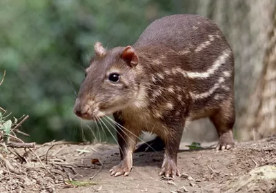
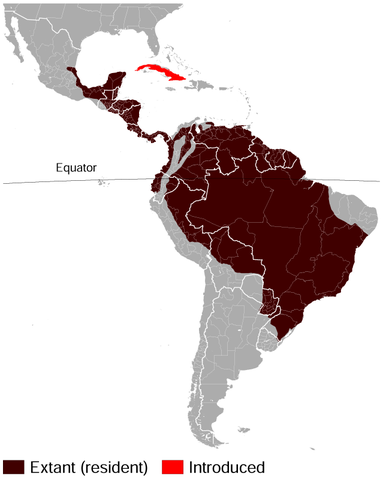

Paca
Nome científico: (Cuniculus paca Linnaeus, 1766)
Nome comum: Paca.
Classificação biológica:
Domínio: Eukaryota.
Reino: Animalia.
Filo: Chordata.
Classe: Mammalia.
Ordem: Rodentia.
Família: Cuniculidae.
Gênero: Cuniculus.
Espécie: Cuniculus paca.
Nutrição: Herbívoro.
Hábitos alimentares: Alimenta-se de frutos, sementes, raízes e folhas.
Morfologia do corpo: Possui corpo robusto, pelagem curta e marrom com manchas brancas laterais. Mede entre 60 e 80 cm de comprimento e pesa entre 6 e 12 kg.
Comportamento: É um animal noturno e solitário, excelente cavador e nadador, utilizando tocas subterrâneas para se esconder.
Principais Alimentos: Frutos, sementes, raízes e folhas.
Principais Predadores: Onças, jaguatiricas, cobras e humanos (caça ilegal).
Locais habitados
Distribuição:Vive nos biomas Pantanal, Mata Atlântica, Cerrado e Amazônia.
Habitat: Habita florestas tropicais, áreas alagadas e margens de rios.
Reprodução: A gestação dura cerca de 100 a 120 dias, resultando em 1 a 2 filhotes por ninhada, que nascem bem desenvolvidos.